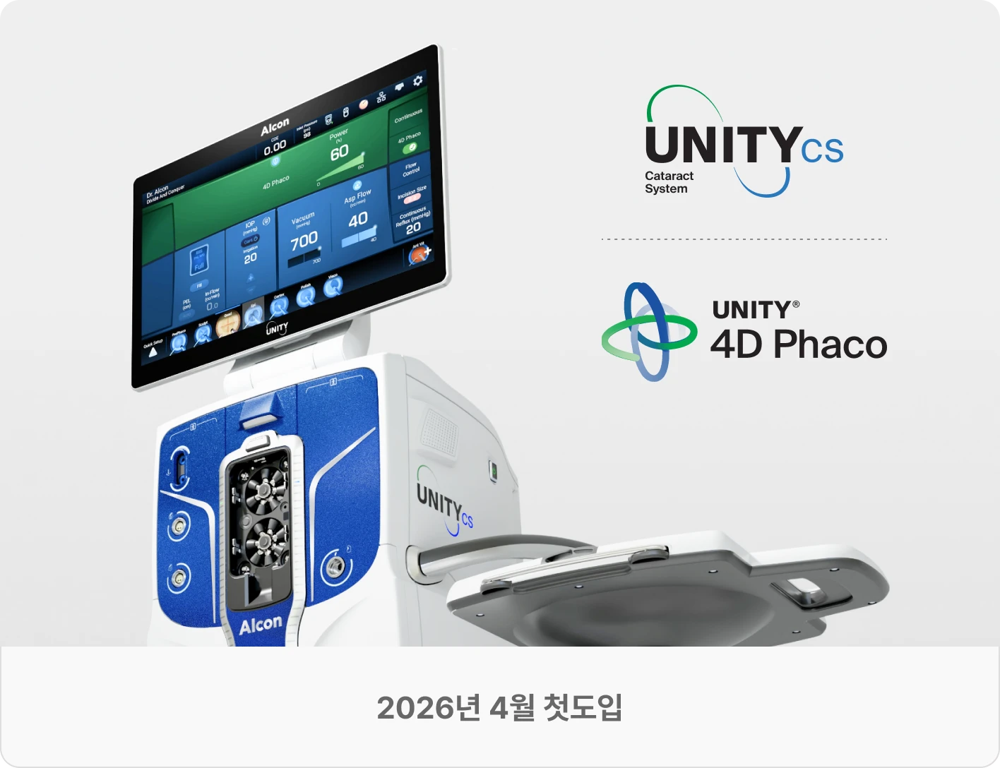
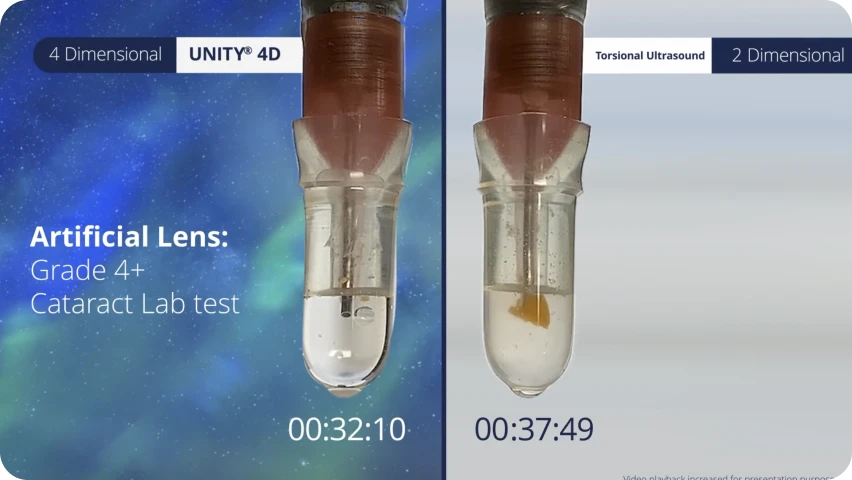
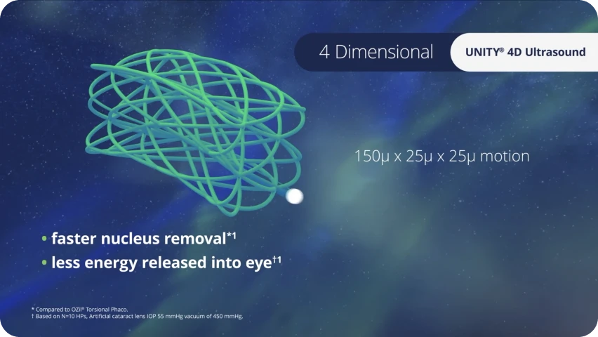
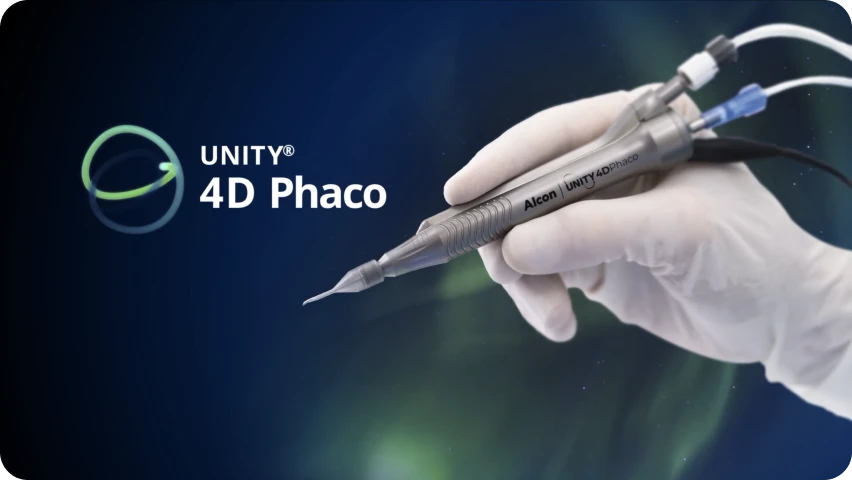
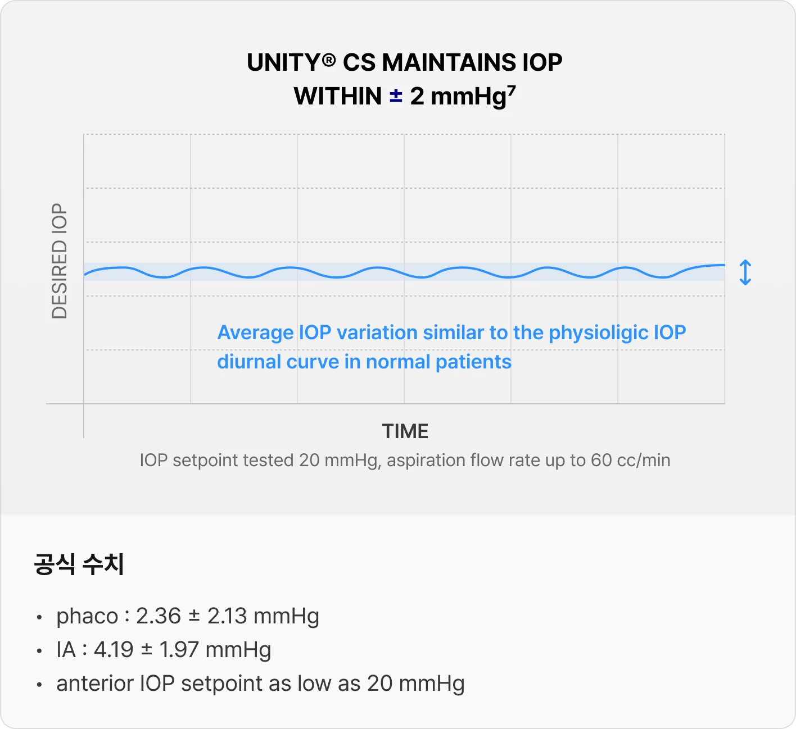
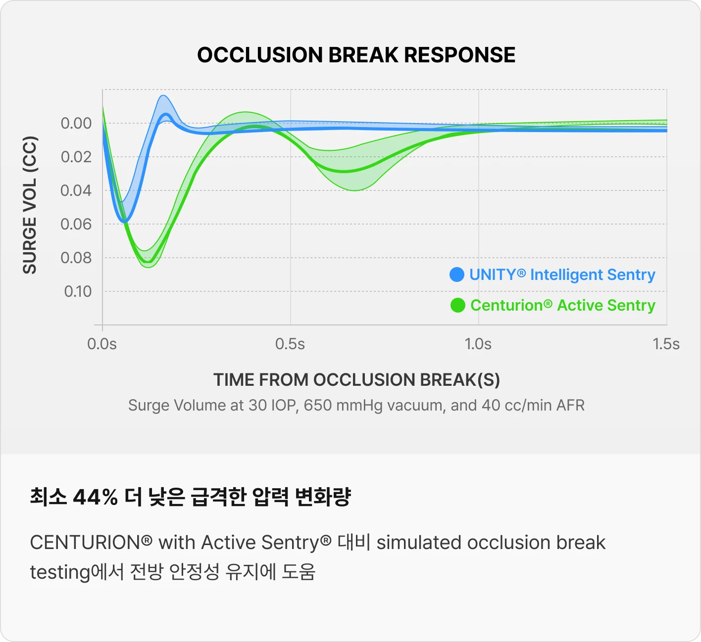

백내장 수술에 특화된 Cataract System, Alcon UNITY® CS
아이리움안과는 Alcon UNITY® CS를 국내 첫 도입했습니다. 수술 중 생체 안압 유지와 에너지 전달 최소화를 통해 로우에너지 백내장수술을 시행합니다.
UNITY® CS 장점- 실제 눈 상태에 더 가까운 안압(IOP)유지
- 로우에너지 수술 기반 UNITY® 4D Phaco
- 백내장 핵 제거 속도 2배 향상
아이리움안과는 Alcon UNITY® CS를 국내 첫 도입했습니다. 수술 중 생체 안압 유지와 에너지 전달 최소화를 통해 로우에너지 백내장수술을 시행합니다.
UNITY® CS 장점
UNITY® 4D Phaco + Intelligent Fluidics



* 2X faster / 41% less energy / 48% less CDE는 알콘 공식 자료(실험실평가데이터) 기준 수치입니다.

* 출처 : Alcon 공식 페이지 Intelligent IOP 설명 및 수치

* 44% lower surge volume, anterior chamber stability 비교는 simulated occlusion break bench testing 기준입니다.